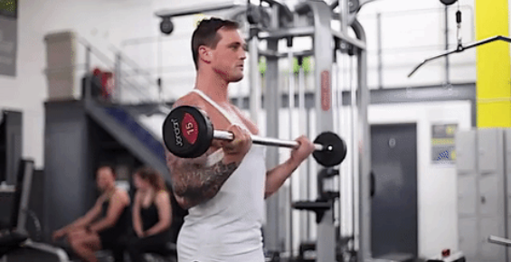

Curl com halteres
| Posição inicial do movimento. | Posição final do movimento. |
- Ficar de pé com um haltere em cada mão e braços estendidos.
- Levantar um haltere de cada vez com rotação de antebraço até a palma da mão estar virada para o ombro.
- Baixar controladamente o haltere até à posição inicial e repetir para o outro braço.
Curl com barra
|  | |
| Posição inicial do movimento. | Posição final do movimento. |
- Ficar em pé e agarrar a barra à largura dos ombros com a palma da mão virada para cima.
- Levantar a barra até à altura dos ombros contraindo bem os bíceps.
- Lentamente, trazer a barra de volta à posição inicial.
Push downs de cabo
| Posição inicial do movimento. | Posição final do movimento. |
- Agarrar na barra em forma de V invertido.
- Ficar em linha reta com uma pequena inclinação para a frente. Manter os cotovelos juntos ao corpo.
- Lentamente, baixar a barra até à extensão completa dos braços.
- De forma controlada voltar à posição inicial.